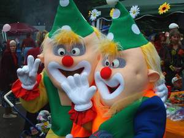
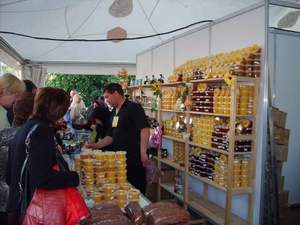
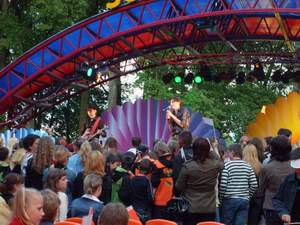
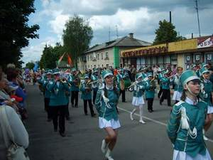
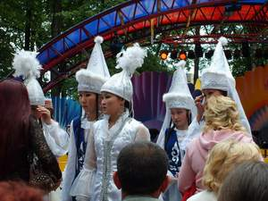
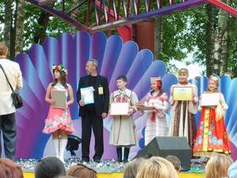

|
VIII Международный фестиваль детского творчества "Золотая пчёлка".
VIII Международный фестиваль детского творчества «Золотая
пчёлка»
начался с приезда первых гостей – уже 27 мая в г. Климовичи
встречали делегацию из Казахстана.

В последующие три дня прибыли представители из Болгарии, Польши,
Румынии, Эстонии, Молдовы, Кыргызстана, Украины, России и разных
уголков Белоруссии.
В течении двух дней в Тимоновском сельском доме культуры и районном
Центре культуры проходили конкурсные прослушивания и просмотр
участников фестиваля в
хореографической и вокальной номинациях.
Жюри возглавлял композитор, народный артист Республики Белоруссия В.К.
Иванов.
В районном Доме ремёсел и краеведческом музее были представлены на суд
компетентного жюри работы декоративно-прикладного и изобразительного
искусства.
В
городском парке работало много выставок-продаж
замечательных изделий учащиеся
детской художественной школы и детской школы исскуств.
В торгвых рядах каждый день было многолюдно. Особым спросом пользовался
мёд «Монастырский»,
представленный на фестивале проектом «Мир мёда и
здоровья».

29 мая зрителей на концертной площадке амфитеатра порадовали
своим выступлением детские хореаграфические
коллективы из Бобруйска и и вокальный ансамбль из Минска,
продемонстрировавшие белорусское танцевально-песенное искусство.
Вечером следующего дня состоялся «Бал его
Величества Таланта».
После торжественного поднятия флага фестиваля прошлогодней
обладательницой Гран-при
учащейся Климовичской детской ходожественной школы Дарьей Голиковой,
началась
программа, подготовленная творческими коллективами областного центра с
участием
симфонического оркестра Могилёвского музыкального училища им.
Римского-Корсакова,
а также выступали делегации от каждой из стран участниц фестиваля.
А завершился этот день праздничным фейерверком.
В субботу состоялся сольный концерт заслуженного
артиста республики Белоруссия,
мастера пародии и юмора Владимира Радивилова.
В
творческую командировку на фестиваль «Золотая
пчелка» в Климовичи прибыли группы Litesound, Atlantica и Da
Vinci. Концерт от МТС с их участием начался в городском парке в 19:00 и
длился более трех часов.
В торжественной обстановке в субботу свидетельство, медаль и почётный
знак Специального фонда Президента Республики Белоруссия по поддержке
талантливой молодёжи
получили юные жители г. Климовичи Дарья Голикова, Дмитрий Рыжиков,
Екатерина Ефименко,
Андрей Анищенко, Виктория Костенкова,сергей Салобуто, Анастасия Чабан.
А дипломы райисполкома, мягкие игрушки принимали победители и призёры
конкурсов
рисунка на асфальте и на мольберте, на лучшее сладкое изделие,
спортивных и других мероприятий.
Субботний день также завершился праздничным фейерверком.

Завершающий день фестиваля, приуроченный к Дню
защиты детей начался с карнавального шествия делегаций.
Красочная колона, возглавляемая мажорнетками и духовым
оркестром, от кинотеатра "Беларусь" начала
своё шествие к площади 50 летия Великого Октября. Участников фестиваля
приветствовали аплодисментами жители и гости нашего города.
Можно было подумать, что почти всё население города выстроилось
по пути следования красочной колоны конкурсантов. На центральной
площади города едва хватило всем места, но для танца Дружбы это не
стало помехой.
И вот заключительная часть фестиваля – церемония награждения
и гала-концерт участников фестиваля.
Всего было вручено 226 дипломов (поощрительных, I, II и III степеней) и
5 Гранд-при.
Диплом первой степени в различных номинациях
получили: Татьяна Шамина, вокальная группа
«Жавороночки», образцовые ансамбли народной музыки
«Ярыца» и «Танок»,вокальная
группа «Вдохновение», Мария Аникина,
Анастасия Пуховская, Евгения Корнейченко и Анна Филипова(Могилёв),
Екатерина Серпун и вокальный дуэт «Свiтанок»
(г.Николаев, Украина),
ансамбль танца «Ритм Гёлз» и образцовый
хореографический ансамбль «Куаныш»
(Казахстан), народный ансамбль танца «Кадынжа»
(Гагаузия, Молдова), вокальный ансамбль
«Dom Harcerza» (Польша), Симеон Железяков
(Болгария).

И наивысшей награды фестиваля – Гран-при
– удостоены народный коллектив «Балетная студия
современного танца «Алексис» из Мозыря, вокальный
дуэт «А-Лау» – Актоты Ажигулова и Лаура
Артелбекова (Казахстан), Юлия Кредько – солистка образцовой
студии эстрадного пения «Соло» (г. Бобруйск),
Наталья
Колегаева – учащаяся Горецкой детской школы художественных
ремёсел, Дарья Мазовская - учащаяся
Оршанской детской школы искусств. Всем им были вручены телевизоры.
Юным участникам фестиваля из Молдовы вручило свой приз
Климовичское отделение Белагропромбанка.

В
заключительном концерте, как всегда, принимали участие самые яркие
участники фестиваля,
с которыми просто не хотелось расставаться.
И всё-таки наступил момент прощания. В дорую дорогу дорогим гостям
хлебосольные хозяева преподнесли
караваи на белорусских рушниках.
Выражаю признательность А.Д. Махлову за предоставленные фотографии.
|